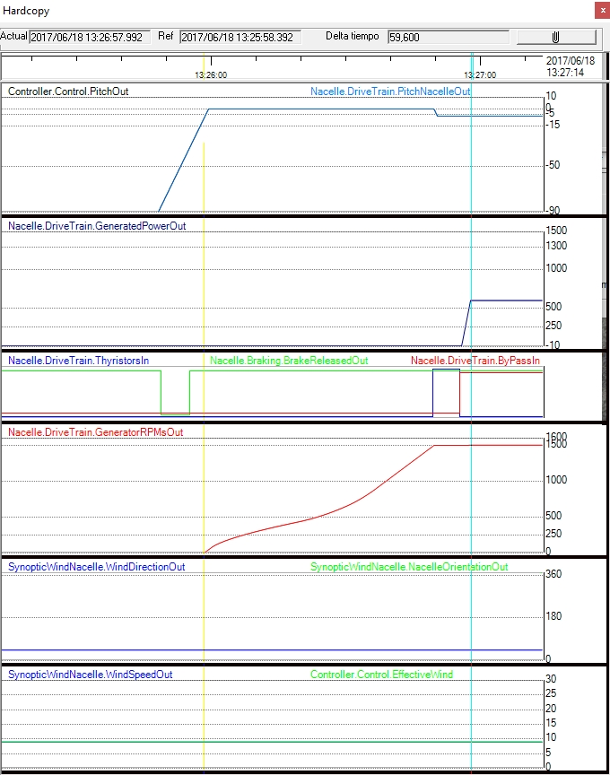

Objetivo: Analizar cómo el momento de inercia del sistema afecta a la aceleración y desaceleración del rotor.
Qué observar: Evolución de la velocidad del rotor ante cambios de viento o consignas.
Qué anotar: Tiempo de respuesta, suavidad de la transición y presencia de oscilaciones.
💡 compara escenarios con distinto momento de inercia manteniendo constantes las demás variables.
En esta práctica se explora el concepto de "momento de inercia" y se experimenta con cambios en su valor.
El concepto físico de "momento de inercia" se aplica a sistemas mecánicos que giran, y es un concepto análogo a la "masa" en sistemas mecánicos que se desplazan. Tiene que ver con la resistencia al cambio en la velocidad de giro de una masa que gira alrededor de un eje.
En el caso de un aerogenerador el conjunto del Tren de Potencia es la parte que tiene un mayor momento de inercia, principalmente debido a las palas (que pesan toneladas). Puede cambiar debido a un cambio del modelo de las palas, o debido a otros acontecimientos, como por ejemplo, el depósito de hielo adherido a las palas.
En esta práctica veremos la influencia del valor de momento de inercia sobre el tiempo que tarda el aerogenerador en llegar a conexión (cutout). Para ello haremos experimentos cambiando este valor usando el parámetro "Nacelle.DriveTrainMomentOfInertia". Acceda al sinóptico "Parámetros".

Fig 1.
Experimento 1 - Con el valor por defecto.
1.Asegúrese de que el aerogenerador está desconectado de la Red.
2.Ponga un viento no muy alto (p.e, 9 m/s)
3.Presente un registrador con el panel "Cutin + Cutout + Producción" (ver Como presentar un Registrador y elegir un Panel predefinido en él. ) Ponga
4.Asegúrese de que no existen incidencias abiertas, excepto "Manual STOP".
5.Pulse "START". Obtendrá una evolución similar a la presentada en la siguiente figura. 
Fig 1.
Si pulsa el botón "Copia" aparecerá otro sinóptico como el mostrado en la figura siguiente. La principal diferencia consiste en que, en éste último, dispone de un procedimiento para "medir distancias en tiempo".
Fig 2.
Al mover el ratón por encima de este sinóptico, se moverá la linea azul. Puede fijar el origen de tiempos en cualquier punto con botón derecho del ratón: "Poner como referencia de tiempo". Fig 3.
Fig 3.
A partir de ese momento tendrá indicación de la distancia en tiempo entre el punto donde está en ese momento el ratón, y el punto elegido como referencia. Ver figura siguiente.
6.Anote que, en este caso, el tiempo transcurrido es de 45,6 segundos.
Experimento 2: con un valor mas alto de momento de inercia.
Repita el experimento 1, pero cambiando previamente el momento de inercia a un valor mayor. Con un valor de 6000000, obtendrá la siguiente evolución de señales.

En este caso, el tiempo desde liberación de frenos hasta producción es de 59,6 segundos.